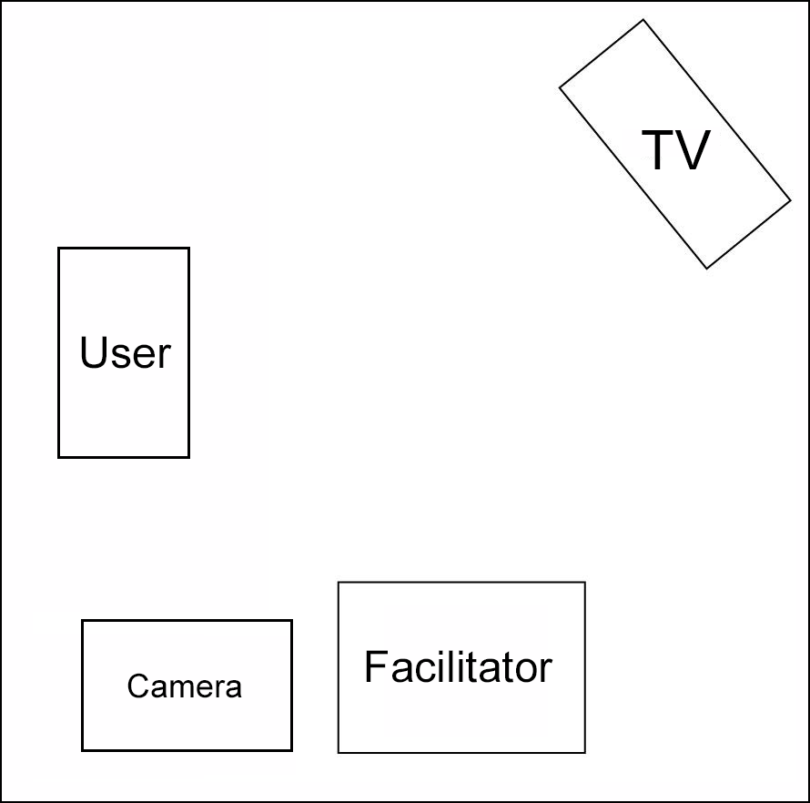

Jewelry Box
Trend Micro, 2012
The Jewelry Box was designed to simplify this cumbersome process with the seamless integration of hardware and software. Users can plug in a camera to the Jewelry Box and it will automatically transfer and upload photos to the cloud. The cloud provides secure storage where users can then view their photos and share them with their family and friends.
Wireframe
This is the moment of truth. This is the step the designers have been waiting for, a lot of exciting and creative things come through from this step. The visual changes, the look and feel with clear hierarchy really makes the whole product look exciting and new.
We used Axure to create a wireframe and shared it within our product and design team, as well as our internal users, and collected feedback from all of them. Sharing the prototype from wireframe enabled everyone to use and interact with the new design on their device. It helps real users to see and interact with the new design, developing a set of questions and feedback to be addressed before development starts.
Each of page, we put remote and screen together, it can easy to understand their interaction, and to think how to make design better.
Mockup
While most apps take place on small, personal-sized screens — TV brings a similar experience to a large screen. From an advertising perspective — this creates a higher potential for multiple user reach with one impression. In the past, that type of experience may have needed to be encouraged through prompting the user. Now, there are potentially others sitting with the main user, or even in a surrounding area with eyes on the screen.
User Testing
The discussion around user test planning included questions and considerations such as:
- Should we ask users to simply guess the gestures to reveal what is intuitive to them, or inform them of the gestures?
- Is an instruction manual required? How much instruction is acceptable, keeping in mind ‘knowledge in the head’ versus ‘knowledge in the world’?
- How can we create a realistic test context in which the user believes the gestures they are making are controlling the Jewelry Box
User Testing Set Up and Process
Our set up included one person controlling the Jewelry Box with its native remote control out of the line of sight of the user. We set up a camera to record the session, which was placed behind the user to capture both user gestures and what was happening on the TV. One team member facilitated the user testing sessions and encouraged users to think aloud and feedback on the spot.
Questions we asked the users throughout testing were those such as:
- What was your thought process as you completed scenario x?
- Can you explain why you used gesture x to execute that function?
- What was your overall impression of the interface?
- How tired are you, having engaged physically with the system for this time
- Having experienced the system, would you prefer to use gestures or the native remote, and why?
Evaluation
We found some of our users’ suggestions surprising. For example, our first user wanted to skip the step of navigating to an icon on the screen, and wanted a pointing gesture to immediately open what he was pointing at. We hadn’t considered this possibility in advance as we focused mainly on mimicking existing Jewelry Box navigation with the remote, which moves sequentially through items on the screen. We recognized, however, that pointing directly at the target was extremely sensical as a gesture even though it wasn’t a repeatable action with the remote. Step by step navigation was still important in some contexts however, especially when navigation to menu items off screen was required.
Reflection
In the end, We found that the tests took longer than expected and we didn’t end up testing whether we would need to incorporate a gesture that activates the system before it starts registering gestures. We recognize that we would need to expand the tests to include multiple people in front of the TV, to gauge whether random hand-motions people make when in conversation, for example, would end up influencing the system (on a side note we question whether a behavioral prototype would be effective for determining the answer to what the technology would register in a group setting).